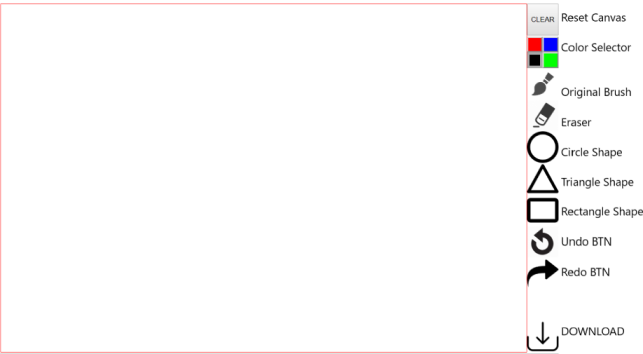

The interface of canvas is shown below.

- The size of the canvas is 1000 * 660 pixels.
- When the mouse is in canvas, the cursor will change to brush or eraser based on what you are using.
- You could draw lines with original brush or place shapes with 3 different shape brushes.
- CLEAR button reset everything, including the undo/redo states.
- Color will be black by default, or you can change it by color selector.
- Whenever switching brushes/eraser, color will be set to black by default.
- Redo button will not work if you have clicked on canvas after undoing.
- If you want to download the canvas, simply click download button, the filename is 'myimg.png'.
- All icons used are free licensed.